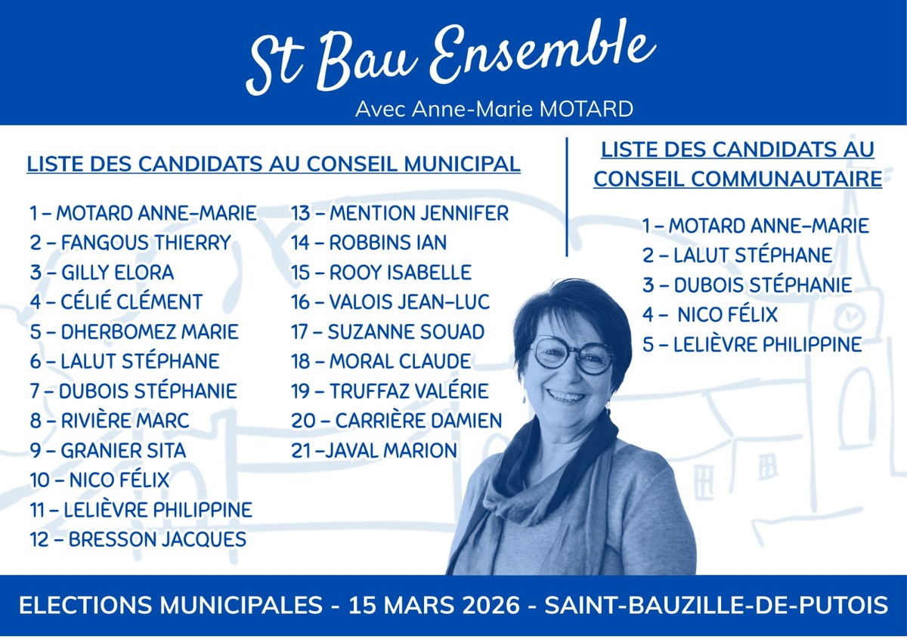

Trois outils d'urbanisme circulent dans le débat local. Voici ce qu'ils signifient réellement — avec les textes de référence, sans interprétation politique.
SCoT, PLU, RNU :
trois niveaux, une seule logique.
Sans PLU, la commune n'a pas de règles propres à opposer aux demandes de construction. Avec un PLU, elle décide elle-même de ce qui se construit — et de ce qui se protège.
Ce n'est pas une contrainte. C'est un outil de souveraineté locale.L'OAP : ce que c'est,
ce que ce n'est pas.
Dans un PLU, une OAP — Orientation d'Aménagement et de Programmation sert à encadrer l'aménagement d'un secteur. Ce terme technique est au cœur d'une confusion importante dans le débat local. Les OAP sont définies aux articles L.151-6 et L.151-7 du Code de l'urbanisme.
Un document d'orientation et d'encadrement. Elle fixe des principes d'aménagement, des objectifs de qualité paysagère, des prescriptions d'accès ou d'organisation du secteur. Elle dit dans quel cadre une zone pourra être aménagée si elle est ouverte à la construction.
Fixer un cadre de qualité : implantation des constructions, continuité des espaces verts, intégration paysagère, accès piéton, organisation d'ensemble. Elle peut donc éviter une urbanisation désordonnée autant qu'encadrer un projet d'ensemble.
L'OAP ne crée pas, à elle seule, un lotissement. Un lotissement est une division foncière destinée à créer des lots à bâtir : c'est une démarche distincte, définie à l'article L.442-1 du Code de l'urbanisme. Confondre les deux, c'est mélanger un cadre d'aménagement et une opération de division foncière.
La loi ZAN : ce qu'elle impose
— et ce qu'elle n'impose pas.
La loi du 20 juillet 2023 (n° 2023-630) — dite loi ZAN pour "Zéro Artificialisation Nette" — impose à toutes les communes de France de réduire progressivement leur consommation d'espaces naturels, agricoles et forestiers.
Une réduction de 50 % de la consommation d'espaces naturels d'ici 2031, et zéro artificialisation nette en 2050. Cette obligation s'applique à toutes les communes, avec ou sans PLU.
Le PLU permet à la commune de décliner ces objectifs nationaux selon ses propres réalités — en protégeant en priorité les terres qu'elle choisit, en concentrant la construction là où elle le décide. Sans PLU, la commune subit la ZAN sans filtre local. Avec un PLU, elle la traduit selon ses choix.
Aucune densité minimale uniforme en logements par hectare applicable à toutes les communes. Ce type de chiffre peut figurer dans un document local — SCoT ou PLU — mais il résulte alors d'une élaboration locale, pas d'une obligation nationale générale.
Avec ou sans PLU :
ce qui change concrètement.
Le tract de la liste « Unis pour Saint Bauzille » contient quatre affirmations sur le PLU. Chacune est reproduite ci-dessous, confrontée aux textes de loi.
« La densité minimale imposée est de 20 habitations par hectare. »
Aucun texte national opposable n'impose ce seuil à Saint-Bauzille.
« La loi est très claire : toute zone ouverte à l'urbanisation devra faire l'objet d'une OAP. »
« (La densité minimale imposée est de 20 habitations par hectare.) »
Ce chiffre ne résulte d'aucune obligation nationale générale. Ni la loi ZAN, ni aucun décret ne fixent une densité minimale uniforme de 20 logements par hectare à Saint-Bauzille. Le SCoT des Cévennes Gangeoises et Suménoises — qui pourrait un jour fixer un objectif local — est encore en cours d'élaboration : aucun chiffre n'a été arrêté.
Le maire sortant invoque « la loi » sans citer un seul article, un seul décret, une seule circulaire. Nous le mettons au défi de produire le texte précis.
Quel texte de loi, quel décret, quelle circulaire fixe ce chiffre de 20 habitations par hectare à Saint-Bauzille ?
Nous n’avons identifié aucun texte national opposable fixant ce chiffre à Saint-Bauzille.
« Une OAP signifie la création de lotissements. »
Une Orientations d'Aménagement et de Programmation (OAP) n'impose pas un « lotissement » au sens courant ; elle encadre un aménagement.
« Toute zone ouverte à l'urbanisation devra faire l'objet d'une OAP. Concrètement, cela signifie un aménagement urbain d'ensemble, autrement dit la création de lotissements. »
Il est exact qu'en principe, l'ouverture d'une zone à urbaniser nécessite une OAP (réforme issue notamment de la loi ALUR, 2014). Mais une OAP n'est pas un lotissement. le maire sortant semble ici confondre deux sens du mot « lotissement » : en droit, un lotissement est une division foncière en vue de bâtir (art. L442-1 du Code de l'urbanisme) ; dans le langage courant, on appelle souvent « lotissement » un ensemble de maisons réalisé par un promoteur. Ce n'est pas la même chose.
Une OAP ne vaut ni division foncière, ni permis d'aménager. Elle encadre la qualité d'un aménagement si une zone est ouverte à l'urbanisation. Et surtout, c'est la commune elle-même qui choisit quelles zones ouvrir — donc où des OAP s'appliquent. L'OAP n'est pas une contrainte venue de l'extérieur.
M. le Maire confond ici un mot du droit de l'urbanisme avec son usage courant : une OAP peut encadrer un secteur à aménager, mais elle ne crée pas, à elle seule, un lotissement au sens juridique du terme.
« L'absence de PLU a permis de débloquer le centre médical. »
Rien ne permet d’établir que l’absence de PLU était la condition juridique de ce projet.
« N'oublions pas également que l'absence de PLU a permis de débloquer la création du centre Médical et Dentaire, un équipement essentiel pour tous les habitants. »
Le centre médical est situé en zone déjà urbanisée. Rien ne permet d'affirmer que l'absence de PLU était la condition juridique nécessaire de ce projet. Le droit commun de l'urbanisme s'applique aux équipements en zone urbanisée indépendamment de tout PLU.
Si le maire sortant affirme le contraire, il lui appartient de produire le texte ou la décision administrative qui l'établit.
Confondre « ça s'est fait sans PLU » et « c'est grâce à l'absence de PLU » : c'est une erreur de raisonnement élémentaire.
« L'absence de PLU protège les habitants des promoteurs. »
Les constructions les plus denses ont précisément eu lieu sans PLU.
« Les promoteurs immobiliers ne doivent pas s'enrichir au détriment de notre qualité de vie. »
Des lotissements particulièrement denses ont bel et bien été construits par des promoteurs dans le secteur de la Plantade — alors que le maire sortant était adjoint à l'urbanisme entre 2005 et 2008. La commune était alors sous RNU, sans aucune règle locale opposable aux promoteurs. On retrouve ici probablement la même confusion sémantique : dans le langage courant, « lotissement » renvoie souvent à une opération de promoteur ; en droit, il s'agit d'abord d'une division foncière. L'absence de PLU ne protège donc pas mécaniquement les habitants des promoteurs : elle prive surtout la commune de règles locales pour encadrer ce qui se construit.
Si l'absence de PLU constituait une protection pour les habitants, c'est à ce moment précis qu'on aurait pu le vérifier.
Celui qui présente l'absence de protection comme une protection a soit oublié ce qui s'est construit sous sa responsabilité, soit compté sur le fait que les habitants, eux, l'auraient oublié.
Ils n'ont pas oublié.Quatre affirmations.
Quatre fois le même résultat.
Un élu peut se tromper. En campagne, répéter ce qu’on ne prouve pas n’a plus le même sens.
Le 15 mars, les Saint-Bauzillois choisiront entre ceux qui citent la loi et ceux qui l'inventent.
Anne-Marie Motard · Saint Bau Ensemble
Lancer le PLU dès 2026.
Avec les habitants. Dans la transparence.
Financé par l'État et la Région — pour les communes qui s'y engagent.
Pour vous repérer le jour du vote :

Questions ou infos de campagne :
stbau.ensemble@gmail.com